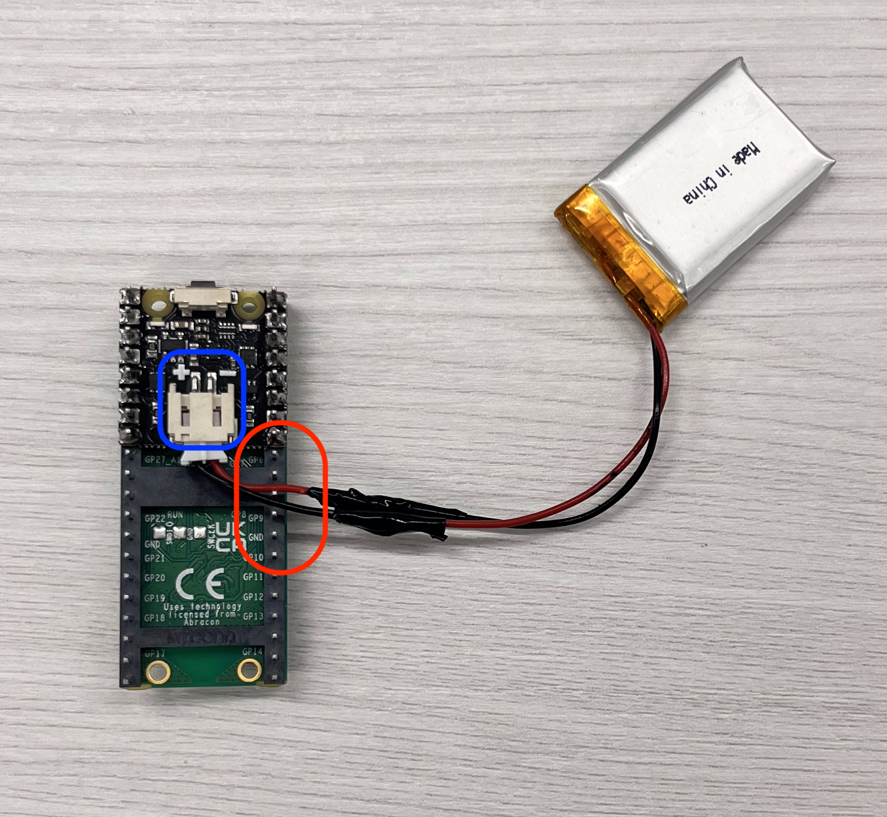

Getting started guide for wireless color sensor#
Overview#
This documentation provides a guide to assemble and test a color sensor package with a dual wireless charging port that could be implemented to the OT-2 liquid handling robot.

Following is a video of liquid color matching demo run on OT-2 with this wireless color sensor:
(Video link to be added)
The estimated time of the hardware assembling is:
Prerequisites#
This documentation assumes that readers have completed Course 1: Hello World and possess basic knowledge of electronic soldering and wiring techniques.
Bill of materials#
Electronic parts:#
Sensor Package:

Wireless charging port (Dual charging):

Note
Qi wireless charging: The wireless charging modules linked above comply with the Qi standard, providing a consistent power output of 5V/500mA within an effective distance of 2-8mm. However, they are relatively more expensive.
Note
Alternative: One lower-cost alternative is this inductive charging set, which requires a 9V power supply. Note that its output is less efficient and inconsistent, varying based on the power input and charging distance. Additionally, it lacks electromagnetic shielding and USB ports, which may require more advanced electronic knowledge to configure.
3D printed parts:#
Sensor package:
① Microcontroller backboard
② Sensor stand
③ Sensor package main enclosure
Wireless charging port:

① Enclosure A side
② Enclosure B side
③ Base board
④ Transmitter supports (2x)
All the 3D printing files can be found in this link. If your 3D printer is Bambu Lab series, project files are available for BambuStudio.
Hint
Print the sensor package and the charging port enclosure with light-color material so that the LED indicators could be visible from the outsides.
Mechanical components and tools:#
Mechanical components:
① M2.5-10mm screws (4x)
② M2.5 hex nuts (4x)
③ Painter’s tape
Tools required:

① Phillips-head #0 screwdriver
② Soldering set
Tools nice to have:

① Tools to remove 3D printing supports and deburr surface
② Multimeter for electronic connection troubleshooting
Hardware assembly#
Preparation / Before you begin assembling:#
3D printed parts preparation:#
Remove all printing supports from the 3D-printed parts. Deburr all the supported surfaces and edges, especially following highlighted areas that will be used for assembly.
Hint
Use wirecutters to remove most of the supports from the printed parts.
Clean up remaining spikes with sharp utility knives or scissors.
inner walls of the sensor package and those of the charging port enclosure A/B

sliding slots on the sensor enclosure and tips on the controller backboard.
You may also test the fit between the sensor enclosure and the pipette on the OT-2. Polish as needed until it achieves a similar fit shown in the photo.

Electronic parts soldering:#
LipoSHIM:
Place the LipoSHIM on the back of the PicoW, ensure the power button of the LipoSHIM and the micro-USB port on the PicoW are on the same side.

Solder 8 pins on each row on the PicoW.
You may connect the PicoW to a micro-USB power supply and use the power button to check the soldering connection; the white LED indicator on the LipoSHIM should light up.

Battery connnector:
If you are working with the battery from the link provided in BOM section or if the polarity of your battery 2-pin JST connector is opposite to that of the LipoSHIM:
Warning
Never connect your battery to PicoSHIM with wrong polarity!
You can correct it by cutting off the connector, swapping the wires, and then resoldering them to match the correct polarity.
Wireless charging unit:
Solder a jumper wire to the C1+ (or C2+) pad and another to the GND pad on the receiver board.
Connect the transmitter to a power supply via micro-USB port and place the receiver on top of the transmitter (coils faced with coils). Check if the blue LED charging indicator on the transmitter board lights up. You may use a multimeter to measure the voltage between the two jumper wires; the reading should be approximately 5V.

Dual charging connection check:#
You may also check the connection of the dual wireless charging setup before start assembling. Use the short micro-USB/USB Type-A cable to connect two transmitters and connect the transmitter that has a free micro-USB port to a power supply. Test the receiver with the same procedure above for the wireless charging unit, the receiver should give a voltage reading of approximately 5V on each transmitter.
Assembling:#
Sensor Package assembling:#
Connect battery to Picow and LipoSHIM assembly:
Ensure the polarity of the battery matches the +/- markings on the LipoSHIM, if you are using the battery from the link provided in BOM section, reverse the polarity before connecting it to the LipoSHIM.
Warning
Never connect your battery to PicoSHIM with wrong polarity!
Connect the battery to the LipoSHIM with the JST connector. Adjust the wires of the battery to through a row of pins on the PicoW.

Test connection: Press the button on the LipoSHIM to power on the PicoW; the white LED indicator on the LipoSHIM should light up. Connect the PicoW to a power supply via the micro-USB port; the red LED charging indicator on the LipoSHIM should also light up.

Power off and disconnect the power supply before proceeding with following steps.
Mount PicoW on Picowbell:
Place the PicoW on the top of the Picowbell sockets; the micro-USB port on PicoW should be at the same side as the STEMMA QT port on Picowbell.

Carefully align the pins and press down the PicoW to secure it onto the Picowbell.
Hint
Since the power button on the PicoSHIM will interfere with the STEMMA QT port on the Picowbell, you don’t need to push the PicoW all the way down.
Connect wireless charging receiver to Picowbell:
Connect the GND jumper wire from the receiver to the GND socket (third on the right, No.38) on the Picowbell.
Connect the C1+(or C2+) jumper wire to the VBUS socket (first on the right, No.40) on the Picowbell.
Place the receiver on the powered transmitter, the red LED indicator on LipoSHIM and the blue LED indicator on the transmitter should light up.

Connect AS7341 to Picowbell:
Connect AS7341 to Picowbell’s STEMMA QT port with a STEMMA QT wire.

Turn on the Picow (using the button on LipoSHIM), the green LED indicator on AS7341 should light on.
Test the color sensor (software testing section)
Assemble Picowbell to the backboard:
Align the assemble holes on Picowbell to those on the backboard, ensuring that the micro-USB port on Picow is positioned on the side of the backboard’s opening slot, adjusting the sensor cable to one side within the case.

Insert the screws through the holes on the Picowbell, position the nuts from the back of the backboard, and secure them with a screwdriver.

Hint
The positions of the nuts and screws can be swapped, but this method is generally easier for assembly.
Secure sensor stand to the main enclosure end:
The sensor stand is a thin board with four spikes, designed with a thinner edge and a thicker edge. Position the sensor stand with the thinner edge at the opening side of the main enclosure and the spikes on the top.
Insert it into the sensor end of the main enclosure. If the sensor stand is properly assembled, the spikes will be slightly higher than the surrounding flat surface.

Secure the color sensor to the stand:
Face down the AS7341, with the yellow square on AS7341 close to opening of the main enclosure, align the assemble holes with four spikes, secure AS7341 to the stand.


The yellow square on AS7341 should be visible from the hole of the sensor enclosure if the sensor is assembled properly.

Note
If you would like to disassemble the sensor or sensor stand after assembly, use a tweezer(or a similar tool) to gently pry up one side of the sensor, then the other side, gradually lifting it out from four spikes. For the sensor stand, use a thin tool to push it up from the bottom. Be careful not to touch the central electronic components of the sensor during this process.
Secure the receiver:
Prepare two pieces of painter’s tape, approximately 40mm long each. Place the wireless charger receiver on the inner wall of the enclosure, with the coils facing against the wall and the receiver board on the right, and secure with the painter’s tape.
Final Assembly of the Backboard and Main Enclosure：
Aligning the sliding tips on both ends of the backboard to the sliding slots on the main enclosure, adjusting all the wires within the enclosure, carefully assemble the backboard to the main enclosure.

Note
Video Guide: You may also refer to this video for step-by-step assembly guide
üéâ Congrats, your wireless color sensor is ready to go!

Dual Charging port assembling:#
Join the A and B sides of the charging port enclosure, aligning them properly, and secure both parts together.

Plug the short micro-USB cable into the micro-USB port on one transmitter.

Place the transmitter onto the transmitter support with the coils facing outward.

Route the coils wires down from the thinner edge of the support.

Insert the transmitter support with transmitter board into the port enclosure assembly. Then, secure it in place, ensuring there is no gap between the transmitter coils and the wall of the sensor slot.

Hint
If there is a gap between the coils and the inner wall, or if the transmitter support bends significantly, consider polishing the walls for assembling to achieve a better fit.
Thread the long micro-USB cable through the square hole into the charging port assembly with the micro-USB head.

Place another transmitter on the transmitter support with the coils facing outward.
Route the coils wires down from the thicker side of the support through the routing slot.

Insert the transmitter support into the port enclosure assembly, leaving the transmitter board on the top. Secure the transmitter support in place, ensuring there is no gap between the transmitter coils and the wall of the sensor slot.

Connect the short USB cable to the USB type-A port on the second transmitter. Connect the long micro-USB cable to the micro-USB port of the second transmitter. If you find any difficulties with cable connections, try swapping two transmitters to rearrange cable.

Connect the long cable to a power supply. The LED indicators on both transmitters should flash in the following sequence: blue; red; blue and red, and all off. If either indcator does not flash, you may check the cable connections.

Arrange the cables inside the enclosure and assemble the base board to the port enclosure. Place the sensor package on the slot of the charging port, the red indicator on the sensor package should light up.


Note
Video Guide: You may also refer to this video for step-by-step assembly guide
Software part#
Test code for sensor#
Before closing the enclosure, you may run the test code for the sensor. Turn on the PicoW, connect it to your PC and follow the setup instructions for Thonny and MicroPython for your Pico W and the AS7341 library file, in Course 1: Hello World.
Save the following codes as “as7341_test.py” and upload it to your PicoW.
import time
from machine import I2C, Pin
from as7341_sensor import Sensor
# Initialize the AS7341 sensor
sensor = Sensor(i2c=I2C(0, scl=Pin(5), sda=Pin(4)))
def read_sensor_data():
"""Read dictionary of sensor data"""
# Get all channel data from the sensor
channel_data = sensor.all_channels
CHANNEL_NAMES = [
"ch410",
"ch440",
"ch470",
"ch510",
"ch550",
"ch583",
"ch620",
"ch670",
]
# Return a dictionary that maps channel names to sensor data
return dict(zip(CHANNEL_NAMES, channel_data))
print("Testing sensor...")
sensor_data = read_sensor_data()
print(sensor_data)
def test_sensor():
"""Interactive testing interface for the AS7341 sensor."""
print("AS7341 Sensor Test")
print("==================")
print("Type 'read' to sample data or 'exit' to quit.")
while True:
# Wait for a command from the user
command = input("Command: ").strip().lower()
if command == "read":
# Ask whether to turn on the LED
led_choice = input("Turn on LED for this reading? (yes/no): ").strip().lower()
if led_choice == "yes":
sensor.LED = True # Turn on LED
print("LED is ON.")
# Trigger sensor data reading
sensor_data = read_sensor_data()
if sensor_data:
print("Sensor Data:")
for wavelength, value in sensor_data.items():
#print(f"{wavelength}: {value}")
print(f"{value}")
else:
print("Failed to read sensor data.")
# Turn off the LED if it was turned on
if led_choice == "yes":
sensor.LED = False # Turn off LED
print("LED is OFF.")
elif command == "exit":
print("Exiting the program.")
break
else:
print("Invalid command. Type 'read' to sample or 'exit' to quit.")
# Directly call the test_sensor function
test_sensor()
Run this script on your Pico W. It should return results as follows; the data for each channel may vary depending on what your color sensor is detecting.
MPY: soft reboot
Detected devices at I2C-addresses: 0x39
Testing sensor...
{'ch583': 1507, 'ch670': 775, 'ch510': 756, 'ch410': 99, 'ch620': 1548, 'ch470': 344, 'ch550': 1172, 'ch440': 294}
AS7341 Sensor Test
==================
Type 'read' to sample data or 'exit' to quit.
Command:
You use command “Read” to start a measurement, and “Yes/No” to control the LED lighting on the color sensor.